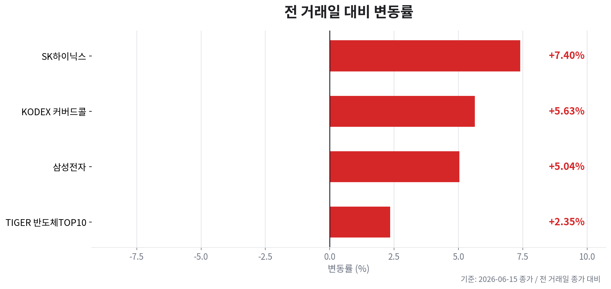
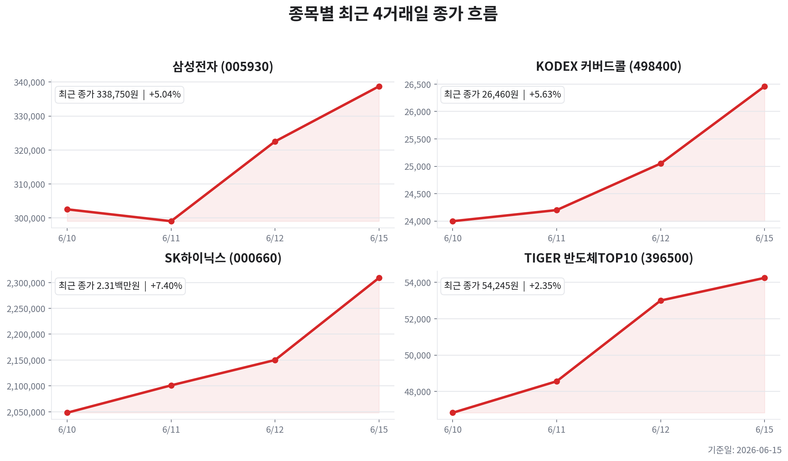

TIGER 반도체TOP10
오늘자 뉴스 0건
| 종목 | 티커 | 기준 가격 | 전 거래일 종가 | 등락 | 변동률 |
|---|---|---|---|---|---|
| TIGER 반도체TOP10 | 396500 | 54,245원 | 53,000원 | +1,245원 | +2.35% |
| KODEX 200타겟위클리커버드콜 | 498400 | 26,460원 | 25,050원 | +1,410원 | +5.63% |
| 삼성전자 | 005930 | 338,750원 | 322,500원 | +16,250원 | +5.04% |
| SK하이닉스 | 000660 | 2,309,000원 | 2,150,000원 | +159,000원 | +7.40% |



오늘의 핵심은 HBM·AI D램 쇼티지 기대가 국내 대형주 랠리를 연장시키는지 여부입니다. 6월 15일 오전 확인 기준 KOSPI는 8,514.47(+4.81%)까지 강하게 반등했고, 삼성전자 339,000원(+5.12%), SK하이닉스 2,312,000원(+7.53%), TIGER 반도체TOP10 54,335원(+2.52%)이 추가 상승 흐름을 보였습니다.
뉴스 플로우는 AI향 D램 공급 부족, HBM 전환에 따른 범용 제품 공급 쇼크 가능성, HBM 공장 용수 확보 경쟁, 반도체 소부장 순환매, 외국인 2.1조원 순매수 복귀 기대가 중심입니다. 반면 미국 10년물 4.49%, 30년물 4.98% 수준의 높은 금리와 미·중 AI칩·AI모델 접근 규제는 밸류에이션 확장에 부담입니다.
현재 메모리 사이클은 공급 부족 → 가격 상승 → 실적 개선 → 주가 상승의 호황 중반 이후입니다. HBM 생산 전환은 AI 서버 수요에는 긍정적이지만, 동일 웨이퍼와 선단 공정이 범용 DRAM 공급을 잠식해 DDR5·서버 D램 가격 지지 요인으로도 작동합니다.
| 변수 | 오늘의 해석 | 투자 시사점 |
|---|---|---|
| HBM/AI D램 | AI칩 다변화와 HBM 병목으로 고부가 메모리 수요가 계속 부각 | SK하이닉스의 순도 프리미엄은 유지, 삼성전자는 고객 인증·공급 확대 뉴스가 재평가 핵심 |
| 범용 DRAM/NAND | HBM 쏠림에 범용 D램 공급 쇼티지 가능성이 제기되고 NAND 고단화 관련 소부장 수요도 부각 | 메모리 랠리가 HBM 선도주에서 장비·소재·NAND 회복주로 확산되는지 확인 |
| CAPEX | 장비 반입 이후 소재·부품 수혜축 이동과 내년 신규 공정 기대가 확인 | 단기 순환매에는 우호적이나, CAPEX 가속은 다음 사이클 공급 과잉의 선행 신호로 관리 |
PER은 호황기 이익 급증으로 낮아 보일 수 있으므로 단순 저PER보다 PBR, 이익 증가율의 둔화 여부, HBM 가격 유지력, 신규 CAPEX의 공급 전환 시점을 함께 봐야 합니다.
| 구분 | 삼성전자 | SK하이닉스 |
|---|---|---|
| 주가 흐름 | 6월 15일 오전 339,000원으로 전 거래일 대비 +5.12%, HBM 추격·AI칩 수주 기대 반영 | 2,312,000원으로 +7.53%, HBM 선도주 프리미엄과 AI D램 쇼티지 기대가 집중 |
| 이익 순도 | 메모리 회복에 모바일·파운드리·NAND가 섞인 복합 회복형 | HBM·서버 DRAM 민감도가 높아 AI 메모리 사이클 순도 우위 |
| 체크포인트 | HBM 고객 승인, AI SSD/NAND 고단화, 파운드리 AI칩 수주 현실화 | HBM 가격·물량 유지, 고객 집중도, 급등 후 차익실현과 외국인 수급 지속성 |
SK하이닉스는 HBM 수혜 순도가 가장 높지만 급등 구간에서는 좋은 뉴스에도 변동성이 커질 수 있습니다. 삼성전자는 후발 HBM 재평가와 AI칩·NAND 모멘텀이 붙을 경우 주가 탄력은 크지만, 실제 인증·수율·수주 확인 전에는 기대 선반영 리스크가 남습니다.
원/달러는 1,505.38원으로 약세 압력이 완화되어 외국인 수급에는 우호적입니다. KOSPI는 외국인 2.1조원 순매수 보도와 함께 8,500선을 시도했으나, 지수 급등 후 프로그램 매도와 현·선물 시소게임 경고도 같이 나옵니다.
| 매크로 변수 | 최근 확인값/흐름 | 반도체 영향 |
|---|---|---|
| 환율 | 원/달러 1,505.38원, 전일 대비 -0.79% | 원화 안정은 외국인 매수와 대형주 밸류에이션에 긍정적 |
| 금리 | 미 10년물 4.49%, 30년물 4.98% | 장기금리 고착은 성장주·고PER 프리미엄 확장 제한 |
| 유가 | WTI 80.73달러(-4.89%), Brent 83.62달러(-4.25%) | 유가 하락은 인플레 부담을 낮추지만 지정학 뉴스에 재상승 가능성 잔존 |
| 정책/규제 | 미국 AI 모델·AI칩 접근 제한, 중국의 엔비디아 칩 차단 보도 | AI 투자 심리에는 양면적이며, 중국 매출·수출통제 리스크는 할인 요인 |
오늘자 뉴스 0건
이 파일은 자동 생성 결과입니다. 투자 판단 전 원문 뉴스와 실시간 호가를 다시 확인하세요.